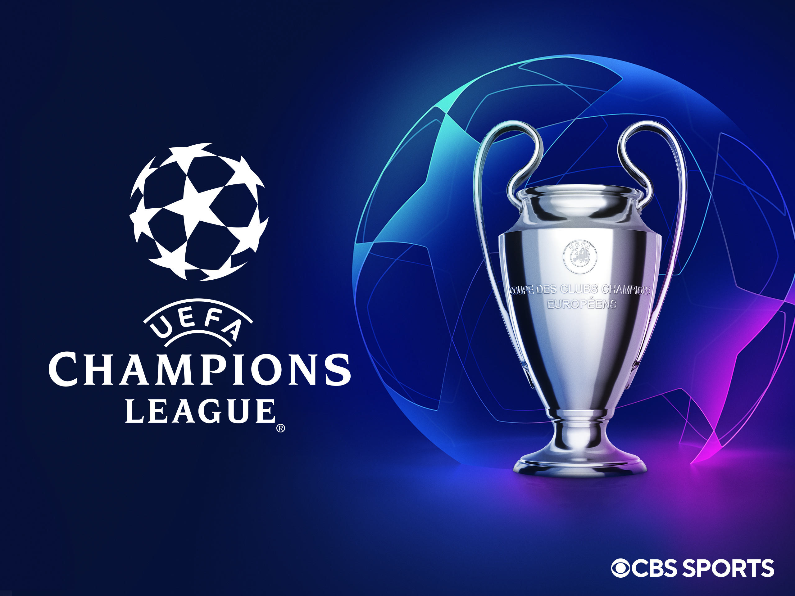
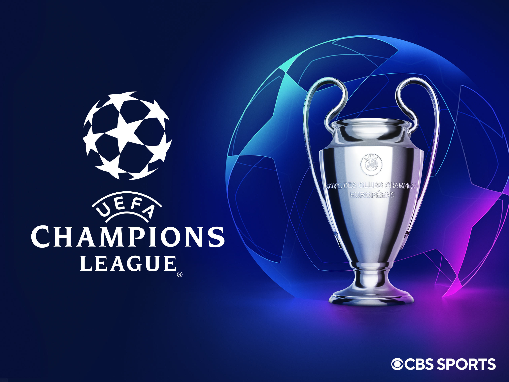
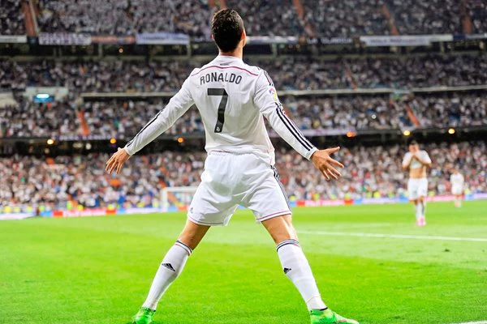
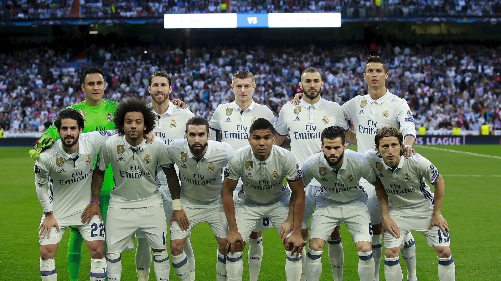
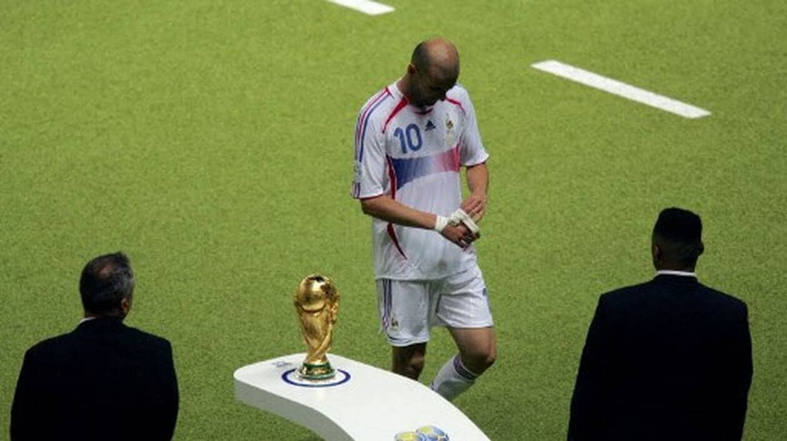
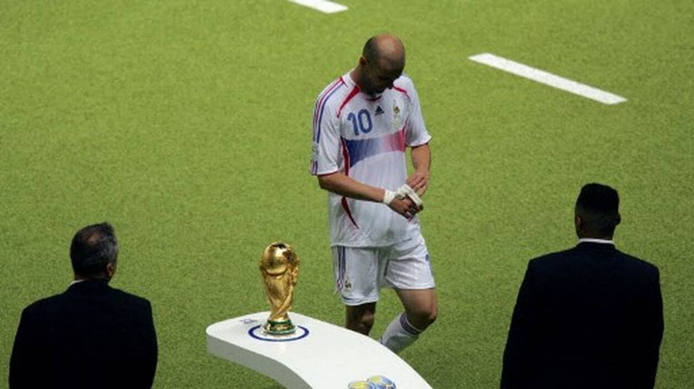
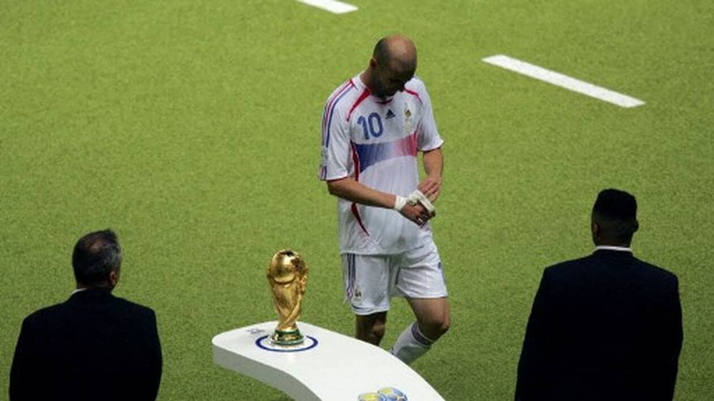

Introduction
Définition
Le football est un sport collectif joué entre deux équipes de 11 joueurs chacune. L'objectif est de marquer des buts en envoyant un ballon dans le but adverse, principalement avec les pieds. C'est le sport le plus populaire au monde, régulé par la FIFA.
Historique
Le football moderne trouve ses origines en Angleterre au XIXe siècle. Cependant, des formes anciennes de jeux de balle existaient déjà en Chine (cuju), en Grèce (harpastum) et en Mésoamérique. La première Coupe du Monde a eu lieu en 1930, organisée par la FIFA.
Légendes
- Pelé : Considéré comme "Le Roi" du football, vainqueur de trois Coupes du Monde (1958, 1962, 1970).
- Diego Maradona : Célèbre pour sa "main de Dieu" et son rôle dans la victoire de l'Argentine en 1986.
- Lionel Messi : Multiple Ballon d'Or et vainqueur de la Coupe du Monde 2022.
- Cristiano Ronaldo : Connu pour sa polyvalence et son éthique de travail exceptionnelle.
- Zinedine Zidane : Icône du football français et vainqueur de la Coupe du Monde 1998.
Coupes
- Coupe du Monde de la FIFA : La compétition la plus prestigieuse, organisée tous les 4 ans.
- Coupe du Monde Féminine : Créée en 1991, elle met en avant les équipes nationales féminines.
- Euro : Compétition européenne des équipes nationales.
- Copa América : Compétition majeure en Amérique du Sud.
- UEFA Champions League : Compétition de clubs la plus prestigieuse en Europe.
Vidéos
Galerie

.jpg) 




 

